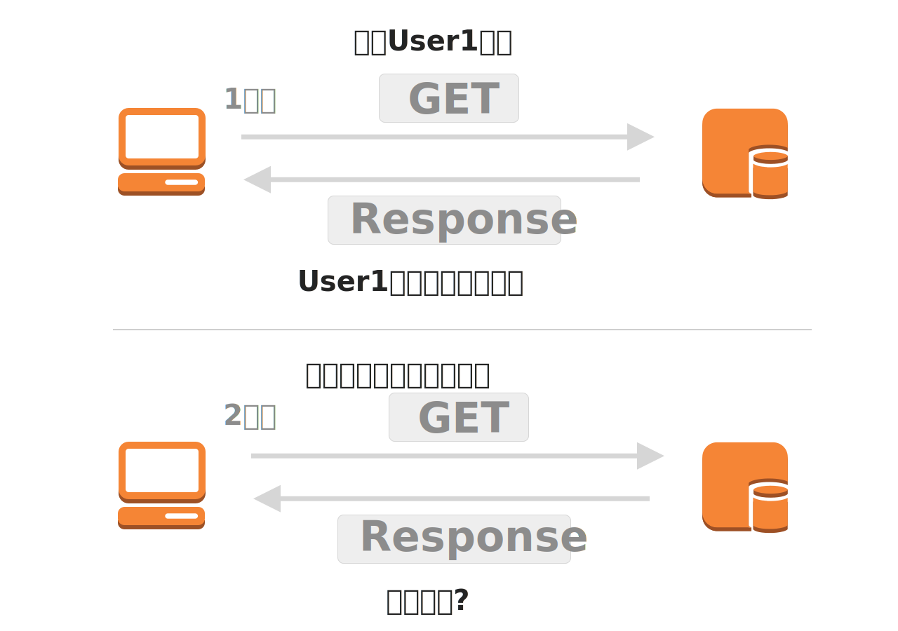
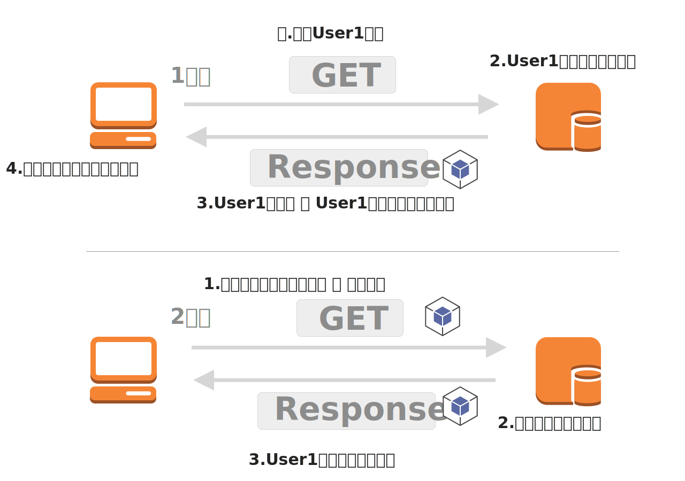
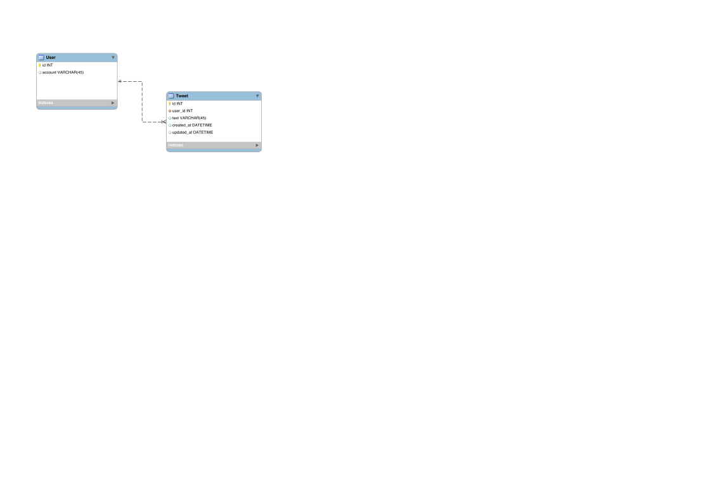

バックエンドエンジニア入門コース Vol.3
***
Agenda
- トレーニング概要
- 前回の振り返り
- ユーザー認証機能を作ろう
- ツイート機能を作ろう
トレーニング概要
Twitterクローンを作成しよう
Day1
Rails環境の立ち上げから簡単なHTML編集まで行います。
- Web概論
- Ruby/Rails概論 li Git基礎
- HTML基礎

Day2
Userの登録機能を作成します
- データベース基礎
- MVCフレームワーク / ORマッパー解説
- 組み込み

Day3
Tweet機能をデータベース設計からModel View Controllerなどを一通り作成します
- データーベース設計
- Rails概論

前回の振り返り
前回やったこと
- Ruby基礎
- データーベース概論 / ORマッパー
- ユーザー登録機能をつくろう
- バリデーションを設定しよう
ユーザー認証機能を作ろう
ログインの仕組み
HTTP/HTTPSは基本的にステートレスなプロトコルで前後の通信の状態を持っていない
ログインの仕組み
クッキーに認証情報を保存しておくことで、サーバー側でログイン許可などを実現
クッキーについて
| カラム名 | 値 (例) | 説明 |
|---|---|---|
| Name | _twitter | クッキー名 |
| Value | BAh7CSIKZmxhc2hJ... | クッキー値 (暗号化したデータをセット) セキュリティ上、以下のようなことを気をつける必要があります ・暗号化したデータをセットする ・パスワードなどの機密情報をクッキーにセットしない |
| domain | .twitter.com | クッキーが届くドメインを指定 .twitter.comと指定することによりサブドメイン間との共有もできる |
| path | / | クッキーを読み込めるパスを指定する 「/」 と指定することで全ページから読み込める |
| Expires / Max-Age | 2028-09-09T01:13:08.543Z | クッキーの有効期限 省略するとブラウザを終了させるまでが有効期限となる |
| HttpOnly | true | CookieをJavaScriptからアクセスできないように制限 |
| Secure | true | HTTPSで通信している場合にのみCookieを送信する |
Railsでのクッキーの種類
| 名前 | 仕組み | メリット | デメリット |
|---|---|---|---|
| CookieStore | Session情報を全てsecret_key_baseで暗号化し、クライアントのCookieに保存する | Railsのデフォルトで用意されているセッション管理方式 サーバ処理の際にDBにアクセスする必要がないため、処理が高速 |
セッション再生攻撃をされる恐れがある サーバでSession情報を保持していないので、Session情報を変更したいタイミングで変更できない |
| Redis（インメモリ方式） | SessionIdを生成し、クライアントのCookieに保存する クライアントから受け取ったSessionIdをもとにRedisから保存情報を取得 |
インメモリのため、処理が早い クライアントにはIDしか保存しないため、情報漏洩のリスクが低い |
Redisサーバを立てる必要があるため、コストが掛かる |
認証機能の実装ステップ
簡易認証機能ではアカウント名のみでログイン可能なものとする
クッキー保存の仕組みはデフォルトのクッキーストアを使用
ログイン機能
- Viewの組み込み作業
- コントローラーにログインロジックの実装
- エラー処理
タイムライン
- セッションからユーザー情報の呼び出し
- タイムラインへ変数の組み込み
ログアウト
- delete用のルーティング追加
- コントローラーへログアウトロジックの実装
- フォームの組み込み
ログイン機能
Viewの組み込み作業
- form_forでviewの必要箇所を囲う
- buttonタグをf.text_fieldやf.submitに置き換えて正しく、フォームが送信されるように調整
# app/views/sessions/new.html.erb
<div class="content">
<header class="header">
<div class="content"><img class="logo" src="/assets/images/icons/tw-icon.svg">
<button class="submit btn primary">ログイン</button>
</div>
</header>
<div class="form">
<h1 class="title">Twitterにログイン</h1>
<input type="text" class="input" placeholder="アカウント名">
<button>アカウント名</button
</div>
</div>
ログイン機能
Viewの組み込み作業[解説]
<div class="content">
<%= form_for @form, url: session_path do |f|%>
<header class="header">
<div class="content"><img class="logo" src="/assets/images/icons/tw-icon.svg">
<%= f.submit "ログイン", { class: "submit btn primary" }%>
</div>
</header>
<div class="form">
<h1 class="title">Twitterにログイン</h1>
<%= f.text_field :account, { class: "input", placeholder: "アカウント名" }%>
</div>
<% end %>
</div>
ログイン機能
コントローラーにログインロジックの実装
- フォームオブジェクトの生成
- パラメーターの受け取り
- ログイン処理
- ログイン成功時にタイムラインへリダイレクト
#app/controllers/sessions_controller.rb
class SessionsController < ApplicationController
def new
@form = SessionForm.new
end
def create
# ここにログイン処理を実装
end
endログイン機能
コントローラーにログインロジックの実装[解説]
#app/controllers/sessions_controller.rb
class SessionsController < ApplicationController
def new
@form = SessionForm.new
end
def create
# パラメータの受け取り
@form = SessionForm.new(session_params)
if @form.valid?
# ログイン処理 (セッション情報の追加)
session[:user_id] = @form.user.id
# タイムラインへリダイレクト
redirect_to timeline_index_path
end
end
private
def session_params
params.require(:session_form).permit(:account)
end
endログイン機能
エラー処理
- バリデーション失敗時にフォームをレンダリング
- エラーメッセージを出力するようviewに組み込み
ログイン機能
エラー処理[解説]
# app/controllers/sessions_controller.rb
class SessionsController < ApplicationController
def new
@form = SessionForm.new
end
def create
# パラメータの受け取り
@form = SessionForm.new(session_params)
if @form.valid?
# ログイン処理 (セッション情報の追加)
session[:user_id] = @form.user.id
# タイムラインへリダイレクト
redirect_to timeline_index_path
else
# バリデーション失敗時にフォームをレンダリング
render :new
end
end
private
def session_params
params.require(:session_form).permit(:account)
end
endapp/views/sessions/new.html.erb<div class="content">
<%= form_for @form, url: session_path do |f|%>
<header class="header">
<div class="content"><img class="logo" src="/assets/images/icons/tw-icon.svg">
<%= f.submit "ログイン", { class: "submit btn primary" }%>
</div>
</header>
<div class="form">
<h1 class="title">Twitterにログイン</h1>
<ul class="errors"><% @form.errors.full_messages.each do |msg| %><li class="errors-item"> <%= msg %> </li><% end %></ul>
<%= f.text_field :account, { class: "input", placeholder: "アカウント名" }%>
</div>
<% end %>
</div>
タイムライン
セッションからユーザー情報の呼び出し
- 保存されたセッションからユーザーの呼び出し
- 変数へ代入
- 保存されたセッションがなければトップへリダイレクト
# app/controllers/timeline_controller.rb
class TimelineController < ApplicationController
def index
# ここで呼び出し処理
end
endタイムライン
セッションからユーザー情報の呼び出し[解説]
# app/controllers/timeline_controller.rb
class TimelineController < ApplicationController
def index
@user = User.find_by(id: session[:user_id])
redirect_to new_session_path if @user.blank?
end
endタイムライン
タイムラインへ変数の組み込み
- 「ユーザー名」 「@account」 「自己紹介」の部分を変数化していく
<div class="content">
# ...省略
<div class="timeline">
<div class="main">
<div class="sidebar">
<div class="profile">
<h1 class="name">ユーザー名</h1>
<h2 class="account">@account</h2>
<div class="description">これは紹介文テキストこれは紹介文テキストこれは紹介文テキストこれは紹介文テキストこれは紹介文テキストこれは紹介文テキスト</div>
</div>
</div>
<div class="content">
<% (1..10).each do |i| %>
<div class="tweet">
<div class="content">
<div class="avatar"><img class="img" src="https://pbs.twimg.com/profile_images/992619235850444800/NRV9dtxv_400x400.jpg" /></div>
<div class="main">
<div class="header">
<div class="item name">ユーザー名</div>
<div class="item account">@account</div>
<div class="item date">2017年10月9日</div>
</div>
<div class="text">本日全ての開発者の皆さんにAccount Activity APIを公開しました。なお、User StreamsとSite Streamsとともに、ダイレクトメッセージの使われていないエンドポイントは本日から3ヶ月後の2018年8月16日（米国時間）に廃止されるよう変更になります。詳細は以下ブログをご覧ください。</div>
</div>
</div>
</div>
<% end %>
</div>
</div>
</div>
</div>
ログアウト
# config/routes.rb
resource :session, only: [:new, :create, :destroy]# app/controllers/sessions_controller.rb
def destroy
session.delete(:user_id)
redirect_to root_path
end# app/views/timeline/index.html.erb
<%= link_to "ログアウト", session_path, method: :delete, class: "submit btn default logout" %>ツイート機能を作ろう
ツイート機能の実装ステップ
- DB設計
- テーブル作成
- スケルトン作成
- ツイート機能実装
- タイムラインへ組み込み
ツイート機能の実装ステップ
DB設計
- ツイートの必要情報
- ツイートとユーザーの関連情報
ツイート機能の実装ステップ
DB設計
ツイート機能の実装ステップ
テーブル作成
- マイグレーションコマンドでファイルの作成
https://railsguides.jp/active_record_migrations.html#マイグレーションを作成する# マイグレーションの作成 bin/rails g migration Tweet # db/migrate/20180926023850_tweet.rb class Tweet < ActiveRecord::Migration[5.1] def change create_table :tweets do |t| # ...こちらにスキーマ定義 t.timestamps null: false end end end
ツイート機能の実装ステップ
テーブル作成
# マイグレーションの作成
bin/rails g migration Tweet
# db/migrate/20180926023850_tweet.rb
class Tweet < ActiveRecord::Migration[5.1]
def change
create_table :tweets do |t|
t.references :user
t.text :tweet
t.timestamps null: false
end
end
endツイート機能の実装ステップ
スケルトン作成
- モデルの作成
クラスの作成
リレーションの定義 - Controllerの作成
クラスの作成
アクションの作成 - ルーティングの設定
ルーティングの設定 (編集/削除はなし)
ツイート機能の実装ステップ
スケルトン作成
モデルの作成
# app/models/tweet.rb
class Tweet < ApplicationRecord
belongs_to :user
end
# app/models/user.rb
class User < ApplicationRecord
has_many :tweets
endControllerの作成
# app/controllers/tweets_controller.rb
class TweetsController < ApplicationController
def new
end
def create
end
endルーティングの設定 (編集/削除はなし)
# config/routes.rb
Rails.application.routes.draw do
# ...省略
resources :tweets, only: [:new, :create]
endツイート機能の実装ステップ
ツイート機能の実装
- newアクションの定義
Tweetモデルのインスタンス生成
- viewの組み込み
form_forによるフォームの生成
- createアクションの定義
パラメーターの受け取り
ツイート保存処理
成功時はタイムラインへリダイレクト
※ ツイートに紐づくユーザーは仮で設定する (最初のユーザー)
ツイート機能の実装ステップ
ツイート機能の実装
newアクションの定義
# app/controllers/tweets_controller.rb
class TweetsController < ApplicationController
def new
@tweet = Tweet.new
end
endviewの組み込み
# app/views/tweets/new.html.erb
<div class="content">
<header class="header">
<div class="content wide">
<img class="logo" src="/assets/images/icons/tw-icon.svg" />
</div>
<%= form_for @tweet do |f|%>
<div class="share">
<div class="title">リンクをあなたのフォロワーに共有する</div>
<%= f.text_area :tweet, { class: "input" }%>
<%= f.submit "ツイート", { class: "submit btn primary" }%>
</div>
<% end %>
</header>
</div>
createアクションの定義
# app/controllers/tweets_controller.rb
class TweetsController < ApplicationController
def create
## TODO: 仮ユーザー
user = User.first
@tweet = user.tweets.build(tweet_params)
if @tweet.save
redirect_to timeline_index_path
end
end
private
def tweet_params
params.require(:tweet).permit(
:tweet
)
end
endツイート機能の実装ステップ
タイムラインへ組み込み
# app/controllers/timeline_controller.rb
class TimelineController < ApplicationController
def index
# TODO: ユーザー仮
@user = User.first
@tweets = @user.tweets.order(created_at: :desc)
end
end# app/views/timeline/index.html.erb
<div class="timeline">
<div class="main">
<div class="sidebar">
<div class="profile">
<h1 class="name"><%= @user.username %></h1>
<h2 class="account"><%= "@#{@user.account }" %></h2>
<div class="description"><%= @user.introduction %></div>
</div>
</div>
<div class="content">
<% @tweets.each do |val| %>
<div class="tweet">
<div class="content">
<div class="avatar"><img class="img" src="https://pbs.twimg.com/profile_images/992619235850444800/NRV9dtxv_400x400.jpg" /></div>
<div class="main">
<div class="header">
<div class="item name"><%= @user.username %></div>
<div class="item account"><%= @user.account %></div>
<div class="item date">2017年10月9日</div>
</div>
<div class="text"> <%= val.tweet %></div>
</div>
</div>
</div>
<% end %>
</div>
</div>
</div>